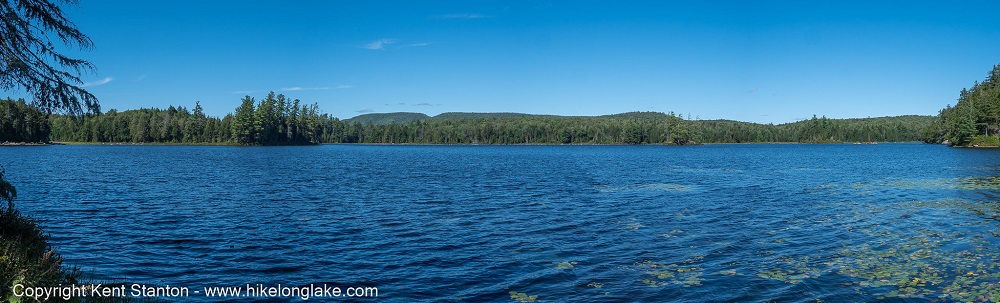

The trail to Bridge Brook and Black Ponds is attractive, but its' main appeal is that there is nothing special about it. Which means that on most days you'll have the place all to yourself.
| Directions | From Long Lake, drive north on Route 30 towards Tupper Lake. After about 13 miles turn left onto NY Route 421. Signs point the way to the “Bog River and Lows Lake. Follow 421 for approximately 3.5 miles to a small parking area on the right. Signs mark the trailhead to Bridge Brook Pond. |
| Difficulty | Easy. This is a mostly flat, 3.8 mile round trip. Plan on 3 to 4 hours with time to stop at the ponds |
| Family-Friendly | Yes, Black Pond is a mile from the trailhead and Bridge Brook Pond a mile beyond that. |
| Winter | This is an excellent trail for cross-country skiing or snowshoeing. |
| One Thing to Know | In the early years of the 1800s an attempt was made to build a road from the Albany Area to Sackets Harbor on Lake Ontario. That road passed up the western side of Tupper Lake and a bridge over the brook that flows out of Bridge Brook Pond and into Tupper Lake gave the pond its' name. |
| NY DEC Webpage | Horseshoe Lake Wild Forest |
| Photo Gallery | Bridge Brook Pond Photo Gallery |

The trail reaches Black Pond at an attractive spot and it is just one mile from Route 421. This is ideal for families with young children or if you are looking for quick walk.
The route passes an beaver pond and meadow area on the eastern end of Black Pond and reaches Bridge Brook Pond at an attractive spot.

Bridge Brook Pond covers about 125 acres with extensive wetlands. It can also be reached by paddling into Black Bay on Tupper Lake, with a 1/2 mile portage to the Pond.